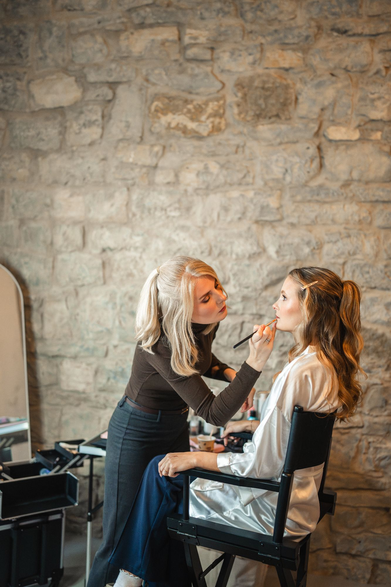
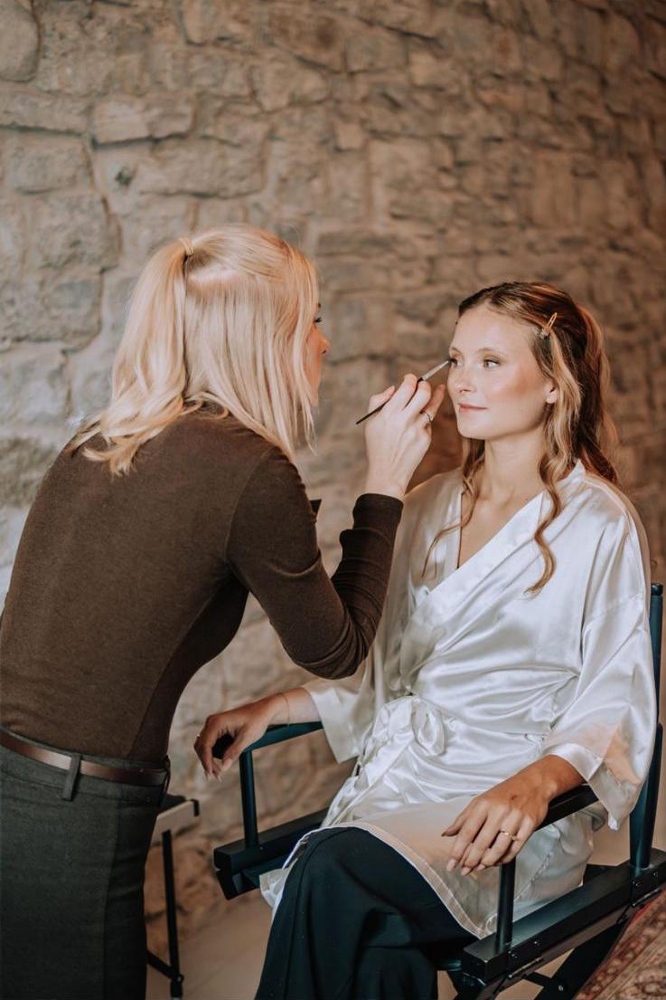

Irina Baumgärtner
Hi, ich bin Irina!
Seit über sieben Jahren bin ich in der Beauty-Branche tätig. Mein Schwerpunkt liegt auf natürlichen Powder Brows sowie Wimpern- und Augenbrauenlifting — und auf Braut-Styling, bei dem ich Make-up und Frisur für den schönsten Tag deines Lebens aus einer Hand gestalte. Mein Ziel ist es immer, Ergebnisse zu schaffen, die langfristig schön aussehen und perfekt zu dir passen – individuell, typgerecht und niemals zu stark betont.
Was mich besonders macht? Neben meiner langjährigen Erfahrung bringe ich auch einen medizinischen Hintergrund mit. Dadurch arbeite ich nicht nur ästhetisch präzise, sondern lege größten Wert auf Hygiene, Hautverständnis und anatomische Feinheiten. Ich betrachte jede Behandlung ganzheitlich.
Ob im Alltag oder an deinem Hochzeitstag: Mir ist wichtig, dass du dich bei mir wohlfühlst, verstanden fühlst und mit einem Ergebnis nach Hause gehst, das dich jeden Tag aufs Neue begeistert.
Du findest mein Home-Studio in Sarstedt — ein Ort, an dem Qualität, Ruhe und persönliche Beratung im Mittelpunkt stehen.
Ich freue mich darauf, dich kennenzulernen!
Qualifikation
 Examinierte Gesundheits- und Krankenpflegerin
Examinierte Gesundheits- und Krankenpflegerin- PMU Artist (Permanent Make-up)
- Lash- & Brow-Lift-Expertin
- Braut-Stylistin (Hair & Make-up)
Werte
- Hygiene nach medizinischem Standard
- Persönliche, ehrliche Beratung
- Natürliche, typgerechte Ergebnisse
- Ruhige, private Atmosphäre
- Für Bräute: Studio oder mobil

